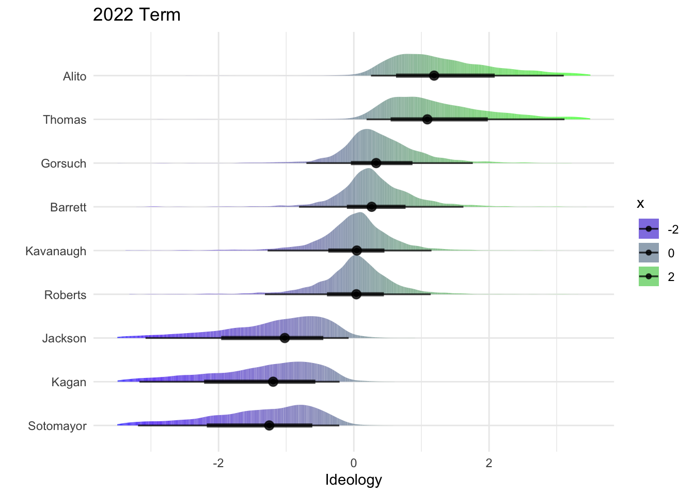

library(dplyr)
library(brms)
library(tidybayes)
library(ggplot2)
library(ggdist)A Conceptual Introduction to IRT
Item-Response Theory (IRT) models are a class of models used to measure latent traits in individuals.1 These are characteristics which we cannot observe directly, such as height or weight, but instead have to infer indirectly through observed actions. For example, a student’s responses to questions on an exam might give us some idea about their latent ability—or a politician’s votes in Congress might give us some idea about their underlying political ideology.
Say we want to estimate how left-wing or right-wing a Supreme Court justice is. We will call this ideology variable \(\theta\). One place is start would be to qualitatively code each Supreme Court decision as either being liberal (0) or conservative (1), and then look at the proportion of times each justice sided with the conservative outcome. Expressed as a statistical model we get:
\[ \begin{aligned} y_{ij} \sim \text{Bernoulli}(\Phi(\theta_i)) \end{aligned} \tag{1}\]
Where whether each justice sides with a conservative decision (\(y_{ij}\)) is based probabilistically on the (scaled) proportion of conservative positions (\(\theta_i\)). The Standard Normal cumulative distribution function (\(\Phi\)) is there to add some random noise in the model. We don’t want our ideology measurements to be deterministic based on past decisions. Instead, we want to allow some room for some idiosyncratic errors to occur. On even the most conservative possible decision, we allow for some tiny probability that Clarence Thomas sides with the liberals. The Bernoulli distribution turns the probabilities produced by the \(\Phi\) function into observed 0’s and 1’s (liberal or conservative votes). See my post on Probit regression models for more on this.
The model in Equation 1 has at least one major flaw. Because there are only parameters for justices (\(\theta_i\)) and none for cases, it treats all cases before the Supreme Court as interchangeable. Additive indices such as these implicitly assume that each “item” (i.e. case) contributes the same amount of weight towards measuring the latent variable in question. In the example of the Supreme Court this is clearly a bad assumption to make since some cases clearly have more ideological importance than others.2
\[ \begin{aligned} y_{ij} \sim \text{Bernoulli}(\Phi(\theta_i + \xi_j)) \end{aligned} \tag{2}\]
Let’s fix this flaw by adding a case-level parameter (\(\xi_j\)) to the model. Equation 2 is commonly known as the 1-Parameter IRT Model.3 Each case now has an independent latent variable for how likely every justice is to vote in the conservative direction. In IRT models within the context of standardized tests, \(\xi\) is called the “difficulty” parameter—questions on exams vary in how difficult they are to answer correctly.
\[ \begin{aligned} y_{ij} \sim \text{Bernoulli}(\Phi(\gamma_j\theta_i + \xi_j)) \end{aligned} \tag{3}\]
The 1-Parameter IRT model in Equation 2 is a big improvement over the additive index model in Equation 1, but if we want to be serious about measuring Supreme Court justice ideology we need to go further. The 2-Parameter IRT model in Equation 3 adds one more case-level parameter (\(\gamma\)) which allows the ideological valence of each case to vary. In the test-taking context, \(\gamma\) is referred to as the “discrimination” parameter. What this means in the context of the Supreme Court is that we expect certain cases to more strongly separate liberal justices from conservative justices.4
Step-by-Step IRT Modeling in brms
Now let’s turn to coding up the IRT model in Equation 3, and using it to measure the ideology of Supreme Court justices. There are three steps to this process:
- Prepare the data
- Build the model
- Extract the ideology estimates
Step 1: Prepare the data
The Washington University Law Supreme Court Database is a fantastic resource for data on Supreme Court cases. We will be using the justice centered data because ultimately it is justice characteristics we care about.
votes <- readr::read_csv(here::here("posts", "irt-brms", "data-raw", "SCDB_2023_01_justiceCentered_Vote.csv"))The votes data frame contains justice voting data stretching back to 1946. It is already in “long format”, which is great because that’s what works best with our modeling approach using the brms R package. By long format we mean that every row contains a unique justice-case pair.5
votes_recent <- votes |>
filter(term == 2022) |>
mutate(direction = case_when(direction == 2 ~ 1,
direction == 1 ~ 2,
.default = NA))Next we will filter out all years except for the 2022 term because this is where the 6-3 vs 3-3-3 debate is taking place. Lastly, we will recode the outcome variable, direction, such that 2 represents the conservative position and 1 represents the liberal position. This helps align liberal with “left-wing” and conservative with “right-wing” on the ideology scale we are building. The method behind coding a decision as liberal versus conservative is explained in more detail here.
Step 2: Build the model
irt_formula <- bf(
direction ~ gamma * theta + xi,
gamma ~ (1 | caseId),
theta ~ (1 | justiceName),
xi ~ (1 | caseId),
nl = TRUE
)
irt_priors <-
prior(normal(0, 2), class = b, nlpar = gamma, lb = 0) +
prior(normal(0, 2), class = b, nlpar = theta) +
prior(normal(0, 2), class = b, nlpar = xi)get_prior(
formula = irt_formula,
data = votes_recent,
family = bernoulli(link = "probit")
)irt_fit <- brm(
formula = irt_formula,
prior = irt_priors,
data = votes_recent,
family = bernoulli(link = "probit"),
backend = "cmdstanr",
cores = 8,
threads = threading(2),
control = list(adapt_delta = 0.99,
max_treedepth = 15),
refresh = 0,
seed = 111
)Running MCMC with 4 chains, at most 8 in parallel, with 2 thread(s) per chain...
Chain 2 finished in 32.4 seconds.
Chain 4 finished in 33.3 seconds.
Chain 3 finished in 34.9 seconds.
Chain 1 finished in 57.1 seconds.
All 4 chains finished successfully.
Mean chain execution time: 39.4 seconds.
Total execution time: 57.2 seconds.summary(irt_fit) Family: bernoulli
Links: mu = probit
Formula: direction ~ gamma * theta + xi
gamma ~ (1 | caseId)
theta ~ (1 | justiceName)
xi ~ (1 | caseId)
Data: votes_recent (Number of observations: 623)
Draws: 4 chains, each with iter = 2000; warmup = 1000; thin = 1;
total post-warmup draws = 4000
Multilevel Hyperparameters:
~caseId (Number of levels: 55)
Estimate Est.Error l-95% CI u-95% CI Rhat Bulk_ESS Tail_ESS
sd(gamma_Intercept) 1.66 1.11 0.34 4.55 1.00 715 1102
sd(xi_Intercept) 2.80 0.69 1.61 4.30 1.00 616 1205
~justiceName (Number of levels: 9)
Estimate Est.Error l-95% CI u-95% CI Rhat Bulk_ESS Tail_ESS
sd(theta_Intercept) 1.45 1.12 0.35 4.29 1.00 1287 1751
Regression Coefficients:
Estimate Est.Error l-95% CI u-95% CI Rhat Bulk_ESS Tail_ESS
gamma_Intercept 1.09 0.71 0.20 2.96 1.00 1274 1513
theta_Intercept -1.02 1.03 -3.24 0.93 1.01 337 538
xi_Intercept 0.90 0.76 -0.77 2.27 1.01 261 626
Draws were sampled using sample(hmc). For each parameter, Bulk_ESS
and Tail_ESS are effective sample size measures, and Rhat is the potential
scale reduction factor on split chains (at convergence, Rhat = 1).justice_draws <- irt_fit |>
spread_draws(r_justiceName__theta[justice,]) |>
ungroup() |>
mutate(justice = case_when(justice == "SAAlito" ~ "Alito",
justice == "CThomas" ~ "Thomas",
justice == "NMGorsuch" ~ "Gorsuch",
justice == "ACBarrett" ~ "Barrett",
justice == "JGRoberts" ~ "Roberts",
justice == "BMKavanaugh" ~ "Kavanaugh",
justice == "KBJackson" ~ "Jackson",
justice == "EKagan" ~ "Kagan",
justice == "SSotomayor" ~ "Sotomayor"),
theta = r_justiceName__theta,
justice = forcats::fct_reorder(justice, theta))get_variables(irt_fit)justice_draws |>
ggplot(aes(x = theta,
y = justice)) +
stat_slabinterval(aes(fill_ramp = after_stat(x)),
fill = "green",
density = "unbounded",
alpha = .75) +
scale_fill_ramp_continuous(from = "blue") +
xlim(c(-3.5, 3.5)) +
labs(x = "Ideology", y = "", title = "2022 Term") +
theme_minimal()
# ggsave("judge_ideolog.png", bg = "white")Footnotes
IRT can also be used on non-individual units, such as organizations, but most examples use individual people.↩︎
The no-ideological-difference-among-items assumption is pretty much always wrong, yet researchers continue to use additive index scales of latent variables in the social sciences all time. Do better! It’s not that hard!↩︎
Which is confusing because there are two parameters in the model: \(\theta\) and \(\xi\). Note that \(\theta\) in Equation 2 is not formulated exactly the same as the additive index \(\theta\) in Equation 1. In Equation 2 \(\theta\) is simply an arbitrary parameter for the latent variable as opposed to the scaled proportion of conservative votes as in Equation 1. We can, however, still interpret larger values of \(\theta\) as more conservative and lower values of \(\theta\) as more liberal.↩︎
A note on notation: in the dozens of books/articles I’ve read on IRT modeling, I have not found even two which share the same Greek letters for the ability, difficulty, and discrimination parameters. Sometimes \(\alpha\) is in place of \(\theta\). Sometimes \(\beta\) is in place of \(\xi\). The \(\gamma\) parameter can be any number of letters. I have decided to contribute to this ongoing mess and confusion by using my own \((\gamma_j\theta_i + \xi_j)\), whose exact permutation I have not seen anywhere else.↩︎
Long data is in contrast to “wide” data in a vote matrix—where the rows are justices and the columns are cases. Older IRT estimation packages, such as pscl, prefer data in the form a vote matrix.↩︎